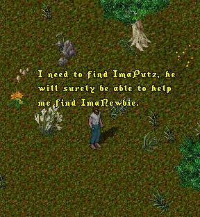
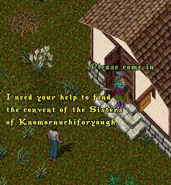
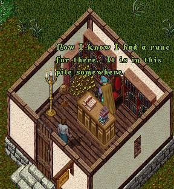
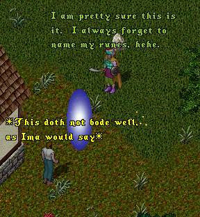
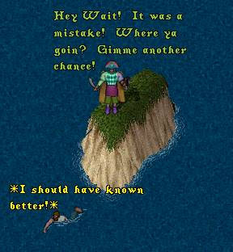
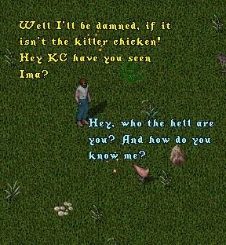
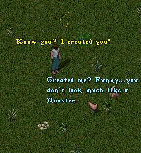
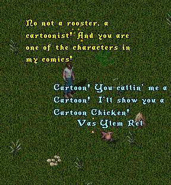
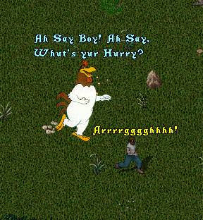

Episode 105: We're not in Kansas anymore, Toto! (Part 3) - This week we rejoin Tryon still desperately trying to find his way out of UO and back to the Real World. Having decided that he must find ImaNewbie, Tryon decides to enlist the help of ImaPutz, the self-proclaimed 'Guild Gumshoe' (i.e. private detective) for ImaNewbie's Guild, the L.O.S.E.R.S. In case you have forgotten, when we last saw ImaNewbie he had been trying to rescue his girlfriend IrmaDufus, and ended up captured and chained to a wall in the convent of the dreaded Sisterhood of Knohmornuchiforyough.





Somewhat less confident in the detective abilities
of ImaPutz, Tryon decides to strike out on his own
again. He has not gone far when who should he run
into but noneother than ImaNewbie's old nemesis,
the 'Killer Chicken'!



